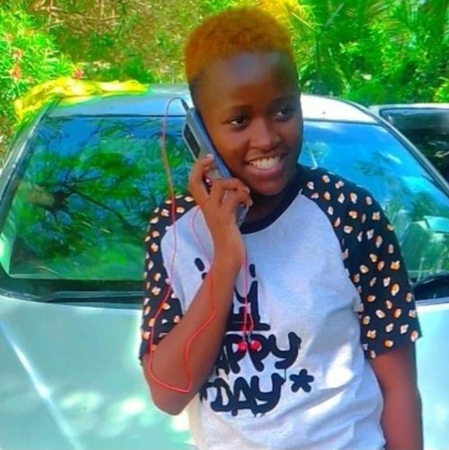

My Journey as a Photographer
Welcome to my photography website! I am passionate about capturing the beauty of the world through my lens. My journey began when I received my first camera as a gift, and since then, I have been dedicated to honing my skills and exploring different styles of photography.
Photography is not just a hobby for me; it is a way to express my creativity and share my perspective with others. I love experimenting with light, composition, and color to create stunning images that evoke emotions and tell stories.
Thank you for visiting my website. I hope you enjoy exploring my work!
